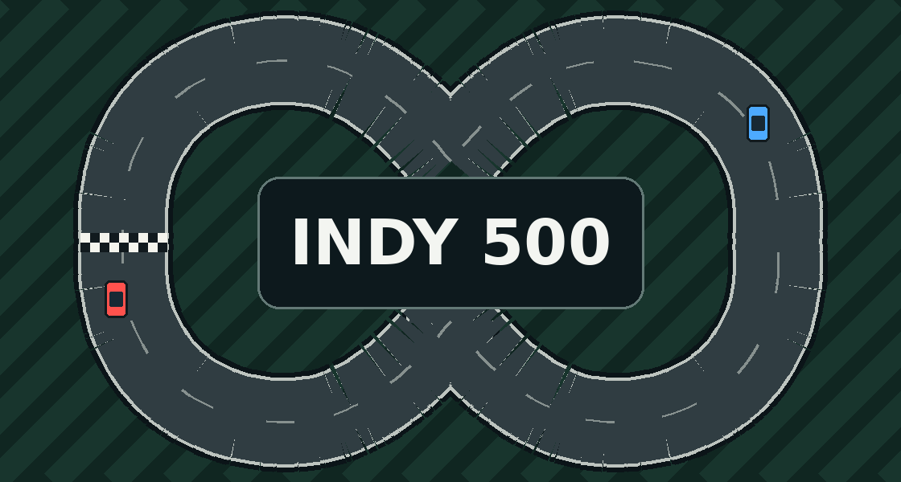
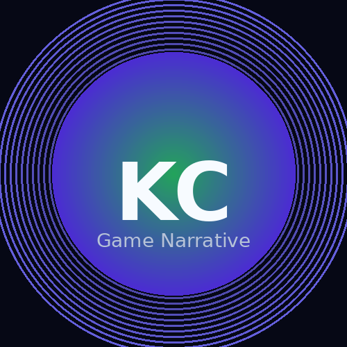
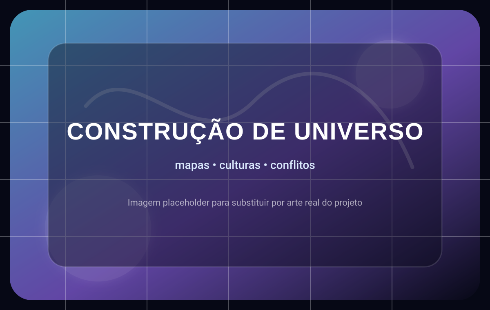
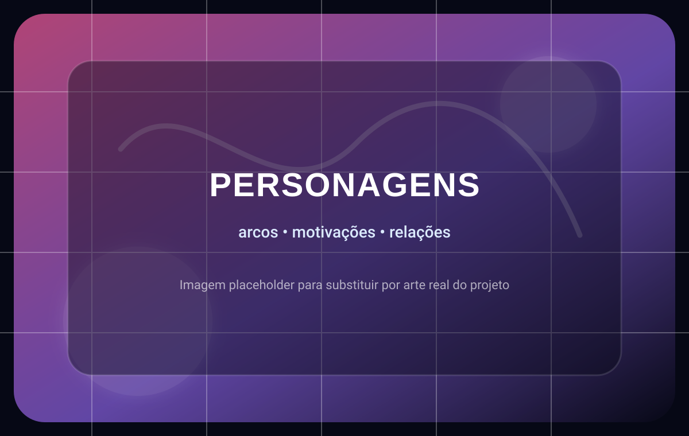
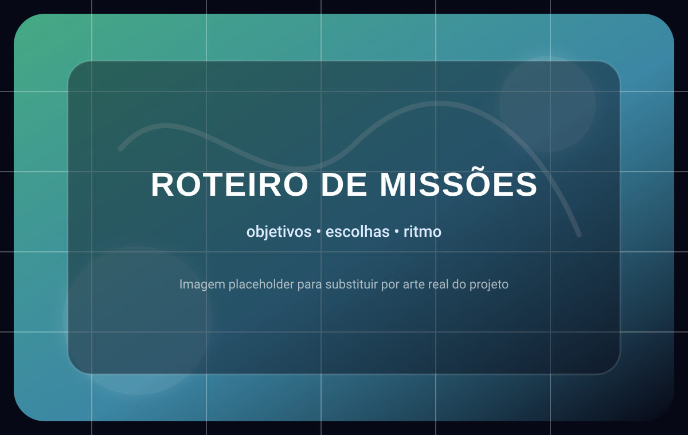
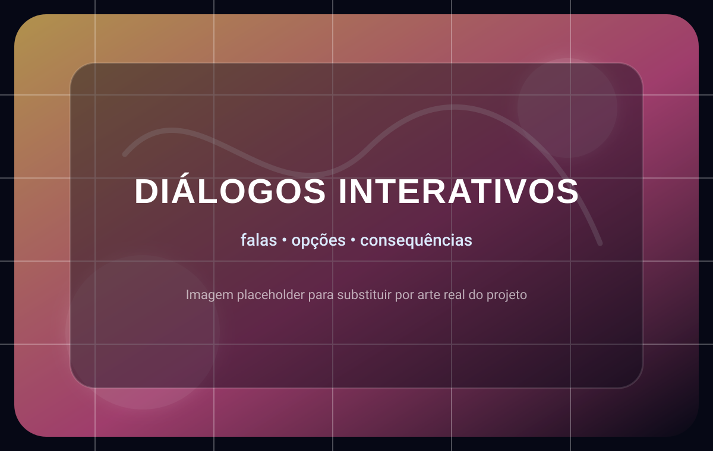
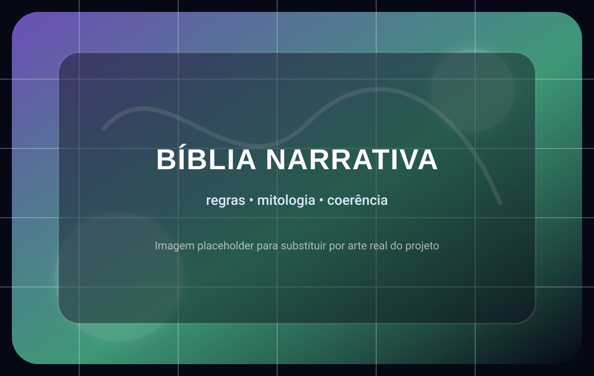

Portfólio profissional
Kauan Calefi Ferreira
Roteirização e Narrativa para Jogos Digitais
Criação de personagens, construção de mundos, diálogos, missões e experiências narrativas pensadas para transformar ideias em jogos memoráveis.
Storytelling
Roteiros e arcos
Worldbuilding
Lore e universo
Unity/C#
Base técnica
Quest Design
Lore Bible
> perfil.carregar()
> foco = "narrativa interativa"
> especialidade = "roteiros, lore e personagens"
> status = "em desenvolvimento constante"
Sobre o profissional
Apresentação
Perfil Criativo
Meu nome é Kauan Calefi Ferreira, sou estudante do Instituto Federal e curso Técnico em Programação de Jogos Digitais. Tenho interesse especial na área de criação narrativa para jogos, principalmente roteirização, desenvolvimento de personagens, construção de universo, diálogos e organização de ideias para projetos interativos.
Sou uma pessoa meticulosa, criativa e curiosa. Posso precisar de um tempo inicial para compreender algumas explicações, mas aprendo rápido, reviso detalhes com cuidado e gosto de transformar conceitos soltos em experiências mais organizadas e envolventes.
Objetivos Profissionais
Atuar na área de desenvolvimento de jogos digitais com foco em narrativa, roteiro, game design narrativo e criação de conteúdo para experiências interativas, unindo criatividade, organização e conhecimento técnico.
Interesses e Áreas de Atuação
Contato e identificação
Dados Pessoais

Narrativa • Jogos • Criatividade
- Nome completo: Kauan Calefi Ferreira
- E-mail: kauancalefi1007@gmail.com
Base acadêmica
Formação Acadêmica
Ensino Fundamental II
- Instituição: Colégio Ideal
- Data de início: Não informada
- Conclusão: Dezembro de 2021
Ensino Médio
- Instituição: Instituto Federal do Paraná
- Data de início: 2022
- Conclusão: Em andamento
Técnico em Programação de Jogos Digitais
- Instituição: Instituto Federal do Paraná
- Data de início: 2022
- Conclusão: Em andamento
Ferramentas e repertório
Conhecimentos Técnicos
01
Narrativa e Roteiro
Estruturação de histórias, criação de arcos, desenvolvimento de personagens, conflitos e progressão narrativa.
02
Game Design Narrativo
Organização de ideias narrativas dentro de mecânicas, objetivos, fases, missões e ritmo de jogo.
03
Programação e Ferramentas
Conhecimentos em HTML, JavaScript, Python, C# e desenvolvimento de jogos com Unity.
Ver todos os conhecimentos técnicos
- HTML
- JavaScript
- Python
- C#
- Desenvolvimento de Jogos com Unity
- Game Design
- Criação e Desenvolvimento de Personagem
- Roteirização
- Narrativa Interativa
- Construção de Universo
Vivência profissional
Experiência Profissional
Jovem Aprendiz em PCP
Empresa: Posigraf
Período: 6 meses
Ver descrição das atividades
- Apoio às rotinas de Planejamento e Controle da Produção (PCP)
- Acompanhamento de ordens de serviço e da programação das máquinas
- Atualização de planilhas e apoio na conferência de relatórios de produção
Auxiliar Administrativo Jurídico
Empresa: Calefi e Repetski Advogados Associados
Período: Janeiro de 2025 – Janeiro de 2026
Ver descrição das atividades
- Organização de documentos e arquivos
- Controle de reuniões e agenda
- Atualização de planilhas
- Elaboração de relatórios simples
- Atendimento de clientes por telefone
Competências comportamentais
Habilidades
- Trabalho em equipe
- Comunicação
- Organização
- Criatividade
- Educação
- Flexibilidade com mudanças
Comunicação
Idiomas
- Português: Avançado
- Inglês: Intermediário
- Espanhol: Básico
Vitrine criativa
Galeria de Projetos
Jogos e conceitos narrativos para explorar.




